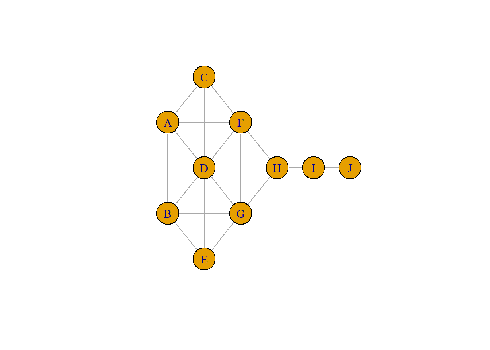
51 Networks and Graph Theory
Suppose we audit the works contracts of a Public Works Division. Sixty contractors are registered with it. On paper they are sixty separate firms, and every tender gets three or four bids. But some of these firms may share a partner, an office address, a mobile number or a bank account. If such linked firms bid against each other, the competition is only on paper. A table of sixty firms will not show this. A picture of who is linked to whom shows it at once.
Many audit questions are like this. Which beneficiaries of a scheme share one bank account? Which firms always bid together? Does money go round in a circle between a few companies? Is a vendor linked to the clerk who passes its bills? These are questions about connections. Network analysis is built to answer them. With R, we can build such networks from ordinary audit data, draw them, find the key players, and find the hidden groups.
In this chapter we learn the ideas of graph theory and the tools to work with networks in R. We start with small examples to learn the words, like vertex, edge, directed and bipartite. We then learn to create graphs, add details to them, and draw them. Finally we build a network of linked contractors of an imaginary Division. We find its key firms and its hidden groups, and we check the Division’s tenders for bids from linked firms. In Chapter 52, we apply the same tools to more audit problems.
51.1 An introduction to graph theory
Network analysis applies the concepts of graph theory, a branch of mathematics, to understand complex systems like social networks, transport networks and financial transactions. Graph theory studies the properties of graphs, such as paths, cycles and connectivity.
51.1.1 Definition of a graph
A graph is a mathematical structure consisting of a set of vertices (also called nodes or actors) and a set of edges (also called connections or links) between these vertices. Mathematically, a graph \(G = (V, E)\) consists of a set \(V\) of vertices and a set \(E\) of edges, as illustrated in Figure 51.1. A vertex may represent a real-world object, like a person, a computer, a firm or a bank account. An edge represents the relationship between the two vertices it connects, like friendship between two persons, a cable between two computers, or a payment from one firm to another.
In audit terms, think of the ten vertices of Figure 51.1 as ten firms, and each edge as a detail two firms share, like a partner or an address.
Types of graph
The graph in Figure 51.1 is an undirected graph, in which the edges have no direction. A shared address is an example. If firm A shares an address with firm B, then B shares it with A. If the edges have a direction, from one vertex to another, the graph is called a directed graph. For example, on X (formerly Twitter) a user may follow another user without being followed back. A payment from one firm to another is also directed. See Figure 51.2.
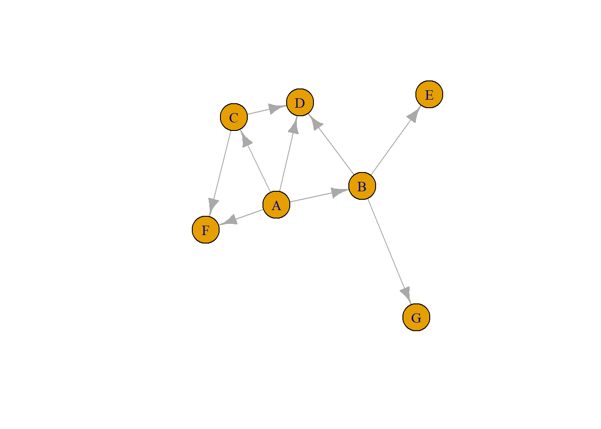
Sometimes an edge connects a vertex with itself. Such an edge is called a self-loop. Graphs which allow self-loops are sometimes called pseudographs. For a real-world example, think of transactions between firms. A firm usually transacts with other firms, but it may also transfer money between two of its own accounts. In Figure 51.3 (left), vertex E is connected with itself.
Further, there may be more than one edge connecting the same pair of vertices (in the same direction). These are called multi-edges. In Figure 51.3 (right) there are two edges from B to E. In audit data, multi-edges are common. One seller raises many invoices on the same buyer, and one Division makes many payments to the same contractor.
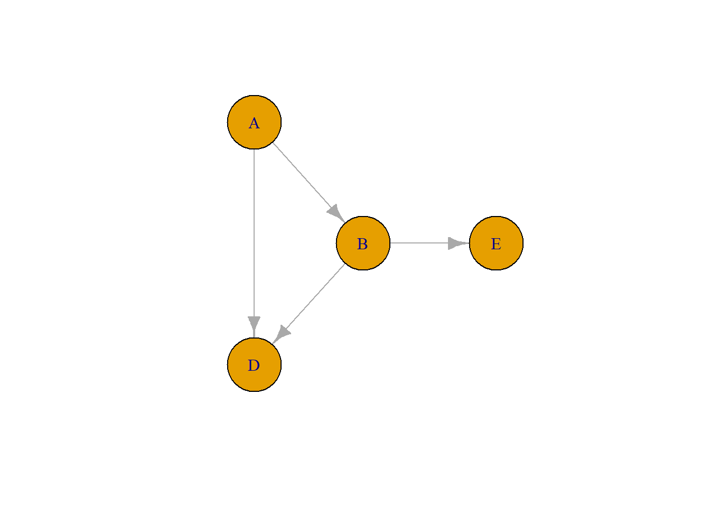
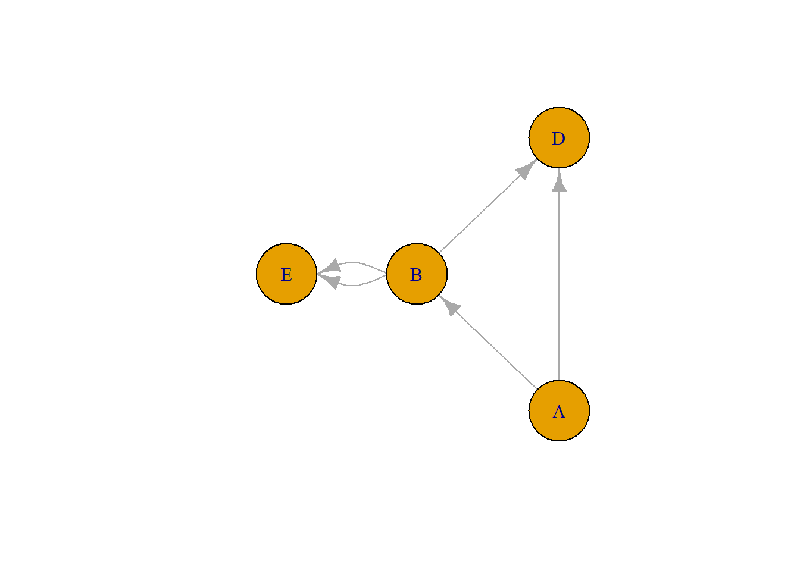
Complete graphs are graphs in which every pair of vertices is connected by an edge. Examples are shown in Figure 51.4. Complete graphs are rare in the real world. But a few vertices of a bigger graph may all be connected with each other. Such a group, which is a complete graph in itself, is called a clique. For example, the vertices B, D, E and G in Figure 51.1 form a clique. Every one of them is connected with the other three. In audit, a clique of firms which all trade with each other, or of bidders who all bid together, deserves attention.
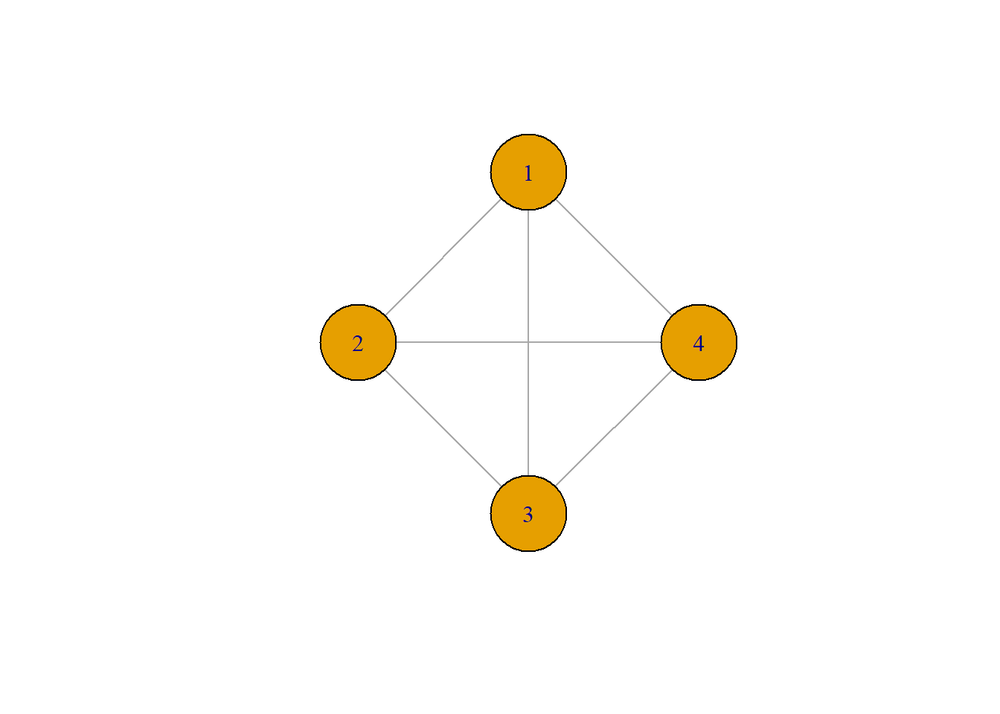
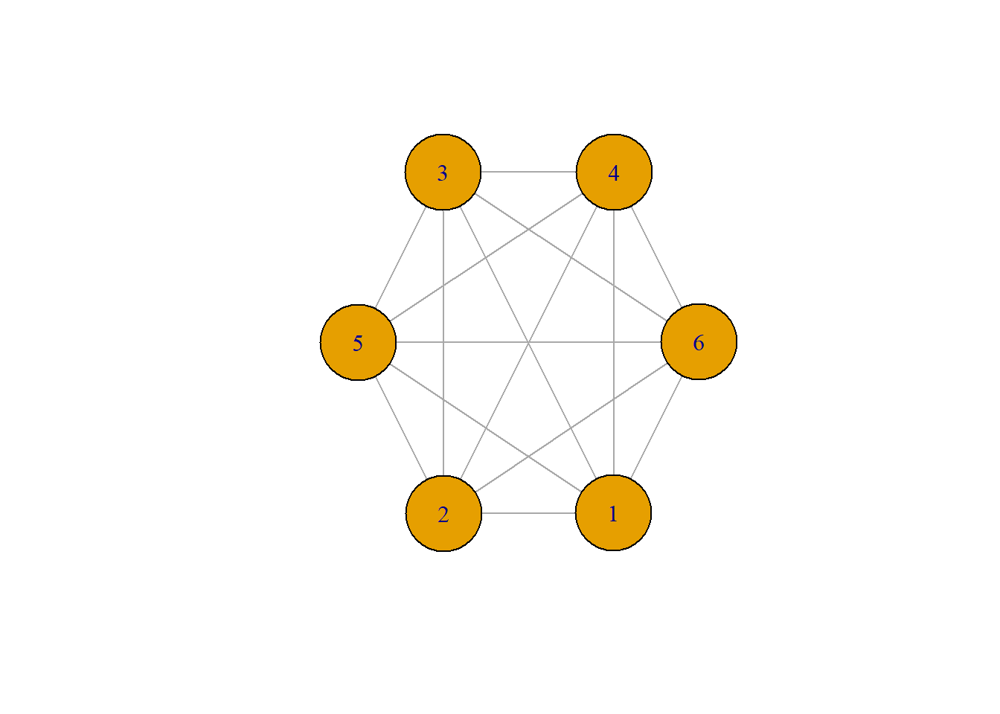
Let us learn about two more types of graph. The first is the bipartite graph. Its vertices are divided into two separate sets, and edges connect only vertices of different sets, never two vertices of the same set. The graph in Figure 51.5 (left) is bipartite. Think of four firms (A1 to A4) and five tenders (B1 to B5). An edge shows that a firm bid in a tender. A firm never “bids” in another firm, and a tender never bids in a tender. In audit, bipartite graphs are very common. Beneficiaries and their bank accounts, or employees and the bills they passed, also form two sets with edges only between the sets. The idea can be extended to k-partite graphs, with k such sets.
The second is the tree, which represents a hierarchy. The offices of a department form a tree, with the head office at the top, then the circles, then the divisions. A graph is a tree if there is exactly one path between any pair of vertices (ignoring direction). The bipartite graph in Figure 51.5 (left) is also a tree, since it meets this condition. In Figure 51.5 (right) the same graph has been redrawn as a tree.
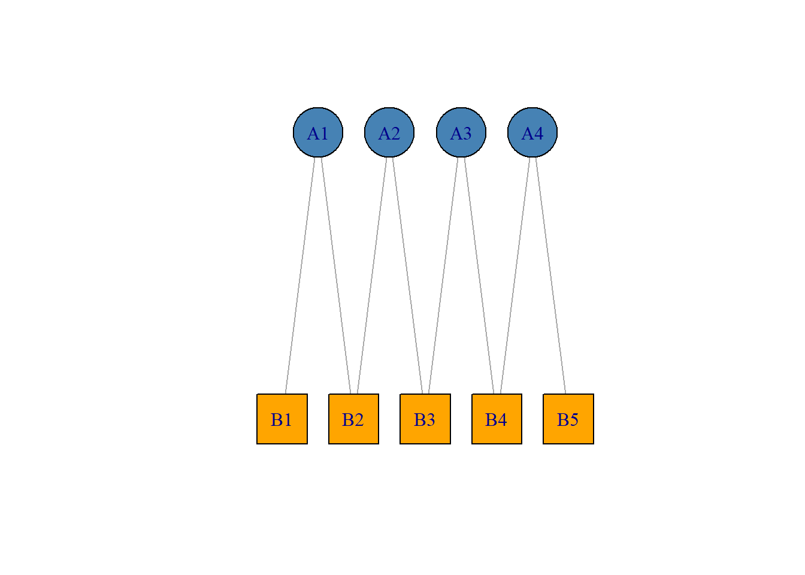
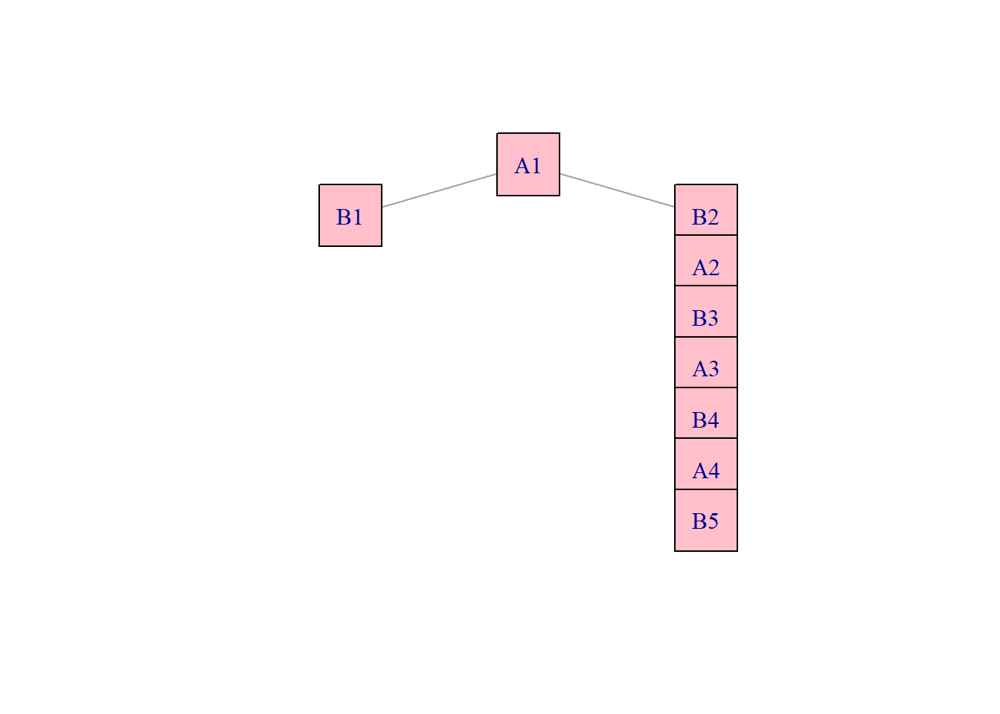
51.1.2 Vertex and edge attributes
Recall that a graph consists of two sets \((V, E)\), where \(V\) is a set of vertices and \(E\) is a set of edges. In their simplest form, these sets are just lists. But both can carry additional attributes.
Let us take an example from the audit of travelling allowance (TA). Officers of a department travel between four cities on tour, and claim TA for the distance travelled. An auditor may keep the routes as a graph. Each city is a vertex, with attributes like (i) its name, (ii) its airport, and (iii) its country. Each route is an edge, with attributes like (i) the airlines operating it, and (ii) the distance in kilometres. A claim for more than the distance of the route can then be spotted. The graph is shown in Figure 51.6. In other audit data, typical edge attributes are the amount and the date of a payment.
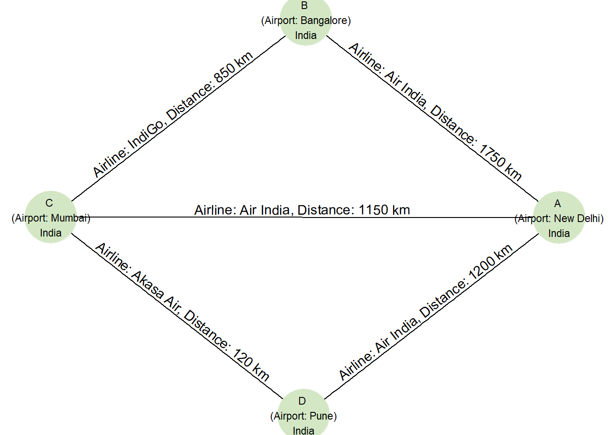
51.2 Practical approach for creating graphs in R
51.2.1 Packages to use
One of the best packages for creating and analysing graphs in R is igraph. It was originally developed by Gábor Csárdi and Tamás Nepusz, and its core is written in the C programming language for good performance. So it can handle networks with millions of edges. Let us load it.
igraph is a complete package for network analysis in itself. We will also use visNetwork and ggraph. The former creates interactive network charts, and the latter creates ggplot2 compatible plots, which can be customised further in a familiar way.
NoteFunction names in igraph
Version 2 of igraph renamed many functions to a consistent snake_case style. For example, as.undirected() is now as_undirected() and graph.data.frame() is now graph_from_data_frame(). The old names still work for now, with a warning. You may find old names in books and websites, but use the new ones in your code.
Let us now learn how to create graph objects in R. Graphs can be created in many ways. We will learn three methods, which will serve our purpose most of the time.
51.2.2 Creating a graph from a data frame
In data analysis, data frames are our primary tool. So the most common and practical way to create a graph is from a data.frame. The data frame should have at least two columns, where each row is one edge. The first column is taken as the 'from' vertex and the second as the 'to' vertex, whatever their column names. We use the function graph_from_data_frame() from igraph. Its syntax is
graph_from_data_frame(
d = , # data.frame of edges
directed = TRUE,
vertices = NULL # optional data.frame of vertices
)Let us construct a graph from a data frame of four edges. Think of the numbers as codes of five bank accounts. Each row is a transfer from one account to another.
# Example data frame of edges, one row per transfer
df <- data.frame(
from = c(1, 1, 3, 3),
to = c(2, 3, 5, 4)
)
# Creating graph object
gr1 <- graph_from_data_frame(df)
# Let us print it
gr1IGRAPH 9546ede DN-- 5 4 --
+ attr: name (v/c)
+ edges from 9546ede (vertex names):
[1] 1->2 1->3 3->5 3->4A graph object named gr1 has been created. Printing it gives us useful information about it.
- The first line always begins with
IGRAPH, followed by seven characters. These are the first characters of a unique graph ID. - Next comes a four-letter code. In this example it is
DN--. The letters mean- The first letter tells whether the graph is directed (
D) or undirected (U). - The second letter,
N, means a named graph, that is, the vertices have anameattribute. - The third letter,
W, means a weighted graph, that is, the edges have aweightattribute. - The fourth letter,
B, means a bipartite graph, that is, the vertices have atypeattribute.
- The first letter tells whether the graph is directed (
- Next come the number of vertices and edges, separated by two dashes.
- The second line lists the attributes of the graph. For each attribute, its kind, graph (
g), vertex (v) or edge (e), and its data type, character (c), numeric (n), logical (l) or other (x), are shown in brackets. - The last lines show the edges.
All four edges of our df are in gr1. Notice that the vertex names are characters, "1", "2" and so on, even though our data had numbers. igraph always stores vertex names as characters.
WarningCaution
In audit, vertices are often account numbers, PANs or vendor codes. Read such columns as text, not numbers. If an account number like 00123 is read as a number, it becomes 123. It may then fail to match the same account in another table, or two different accounts may end up as one vertex.
The argument directed is TRUE by default, so the graph is directed, as confirmed by the first letter D. For transfers, this is right, because money goes from one account to the other. But if we only want to know which accounts have dealt with each other, the direction does not matter. Let us create an undirected graph.
# Creating graph object
gr2 <- graph_from_data_frame(df, directed = FALSE)
# Let us print it
gr2IGRAPH 9549b65 UN-- 5 4 --
+ attr: name (v/c)
+ edges from 9549b65 (vertex names):
[1] 1--2 1--3 3--5 3--4The first letter is now U, and the edges are printed with -- instead of an arrow ->. An existing directed graph can also be converted into an undirected one using the function as_undirected() (and the other way round with as_directed()).
as_undirected(gr1)IGRAPH 954c558 UN-- 5 4 --
+ attr: name (v/c)
+ edges from 954c558 (vertex names):
[1] 1--3 1--2 3--5 3--4Now what about the last argument, vertices? In most cases, the edge data is enough. But a graph may contain isolates, that is, vertices not connected to any edge. These do not appear in the edge data, so to include them we use the vertices argument. Its first column must contain the vertex IDs used in the edge data. Any other columns become vertex attributes. Similarly, any columns of the edge data frame after the first two become edge attributes.
Let us add a sixth account, "6", which made no transfer during the period. It is an isolated vertex. Let us also add the name of each account holder as a label.
df_v <- data.frame(
id = c(1, 2, 3, 4, 5, 6),
label = c("Ramesh", "Suresh", "Anil", "Kavita", "Bimla", "Mohan")
)
# Creating graph object
gr3 <- graph_from_data_frame(df, directed = FALSE, vertices = df_v)
# Let us print it
gr3IGRAPH 954f09b UN-- 6 4 --
+ attr: name (v/c), label (v/c)
+ edges from 954f09b (vertex names):
[1] 1--2 1--3 3--5 3--4The number of vertices is now 6, though there are still 4 edges. The vertex attribute label has also been added, shown as label (v/c). In audit, isolated vertices matter. A contractor who shares nothing with anyone is still a contractor, and must stay in the count.
Readers may try adding more columns to the edge data frame, like an amount or a date, and see how they become edge attributes.
51.2.3 Creating a graph from an edge list
Creating a graph from an edge list is nearly the same as creating it from a data frame. The differences are that the input must be a two column matrix, character or numeric, and that there is no vertices argument. The syntax is
graph_from_edgelist(el, directed = TRUE)Here each edge joins two claimants of a scheme who stood as witness for each other.
edges <- data.frame(
origin = c("Ramesh", "Ramesh", "Anil", "Anil"),
dest = c("Suresh", "Anil", "Kavita", "Bimla")
)
edges <- as.matrix(edges)
# Now let us create a graph
gr4 <- graph_from_edgelist(edges, directed = FALSE)
# And print it
gr4IGRAPH 9551ee5 UN-- 5 4 --
+ attr: name (v/c)
+ edges from 9551ee5 (vertex names):
[1] Ramesh--Suresh Ramesh--Anil Anil --Kavita Anil --Bimla We have created an undirected graph with 5 vertices and 4 edges.
51.2.4 Creating a graph from an adjacency matrix
An adjacency matrix is a square \(n \times n\) matrix, where both the rows and the columns stand for the \(n\) vertices. The \((i, j)\)-th entry of this matrix means
- In a graph without weights,
1means there is an edge from vertex \(v_{i}\) to \(v_j\), and0means there is none. - In a weighted graph, the entry is the weight of the edge from vertex \(v_{i}\) to \(v_j\), and
0means there is no edge.
Let us create the graph of tour routes in Figure 51.6 through its adjacency matrix. First, without weights.
DEL BNG BOM PNQ
DEL 0 1 1 1
BNG 1 0 1 0
BOM 1 1 0 1
PNQ 1 0 1 0# Let us create the graph
gr5 <- graph_from_adjacency_matrix(adj_mat)
# Let us print it
gr5IGRAPH 9554efd DN-- 4 10 --
+ attr: name (v/c)
+ edges from 9554efd (vertex names):
[1] DEL->BNG DEL->BOM DEL->PNQ BNG->DEL BNG->BOM BOM->DEL BOM->BNG BOM->PNQ
[9] PNQ->DEL PNQ->BOMA directed graph (the default) has been created, with 10 edges. Since our matrix is symmetric, each route appears twice, once in each direction, like DEL->BNG and BNG->DEL. For a symmetric matrix, we would usually set mode = "undirected" to get one edge per route. Now let us create a weighted graph of the same data, where the weights are the distances between the cities, in kilometres.
DEL BNG BOM PNQ
DEL 0 1750 1150 1200
BNG 1750 0 850 0
BOM 1150 850 0 120
PNQ 1200 0 120 0# Let us create the graph
gr6 <- graph_from_adjacency_matrix(adj_mat2, weighted = TRUE)
# Let us print it
gr6IGRAPH 9557f88 DNW- 4 10 --
+ attr: name (v/c), weight (e/n)
+ edges from 9557f88 (vertex names):
[1] DEL->BNG DEL->BOM DEL->PNQ BNG->DEL BNG->BOM BOM->DEL BOM->BNG BOM->PNQ
[9] PNQ->DEL PNQ->BOMThis time an edge attribute named weight, of numeric type, has been added to the graph.
51.2.5 Getting data back from graph objects
Once a graph has been created, getting the data back as a data.frame or an adjacency matrix is easy. We use the igraph functions as_data_frame() and as_adjacency_matrix().
-
as_data_frame(). Since older versions of the packagetibblealso had a function of the same name, it is safest to writeigraph::as_data_frame(). It takes a graph and returns adata.frame. Let us get the data back fromgr6, which we created from an adjacency matrix.
igraph::as_data_frame(gr6) from to weight
1 DEL BNG 1750
2 DEL BOM 1150
3 DEL PNQ 1200
4 BNG DEL 1750
5 BNG BOM 850
6 BOM DEL 1150
7 BOM BNG 850
8 BOM PNQ 120
9 PNQ DEL 1200
10 PNQ BOM 120The function worked correctly. Since the graph was directed, each route appears in both directions. Let us also see the output for an undirected graph.
igraph::as_data_frame(as_undirected(gr6)) from to weight
1 DEL BNG 3500
2 DEL BOM 2300
3 BNG BOM 1700
4 DEL PNQ 2400
5 BOM PNQ 240There is one row per route now. But notice that the weights have doubled, for example DEL to BNG is now 3,500. When two directed edges are merged into one, as_undirected() by default adds up their weights. We can choose another way to combine them using the argument edge.attr.comb, which takes a function (or its name) for each attribute. Here, the mean is right.
gr7 <- as_undirected(gr6, edge.attr.comb = list(weight = "mean"))
igraph::as_data_frame(gr7) from to weight
1 DEL BNG 1750
2 DEL BOM 1150
3 BNG BOM 850
4 DEL PNQ 1200
5 BOM PNQ 120This function has another argument, what. It can be "edges" (the default), "vertices", or "both", in which case the two data frames are returned in a list.
# Vertices data only
igraph::as_data_frame(gr7, what = "vertices") name
DEL DEL
BNG BNG
BOM BOM
PNQ PNQ-
as_adjacency_matrix(). This function takes a graph and returns its adjacencymatrix.
as_adjacency_matrix(gr7)4 x 4 sparse Matrix of class "dgCMatrix"
DEL BNG BOM PNQ
DEL . 1 1 1
BNG 1 . 1 .
BOM 1 1 . 1
PNQ 1 . 1 .The adjacency matrix has been returned, but without weights. The dots are zeros. R stores the matrix in a sparse form, which saves memory when most entries are zero, as in most real networks. To get the weights, we use the attr argument, which is NULL by default.
as_adjacency_matrix(gr7, attr = "weight")4 x 4 sparse Matrix of class "dgCMatrix"
DEL BNG BOM PNQ
DEL . 1750 1150 1200
BNG 1750 . 850 .
BOM 1150 850 . 120
PNQ 1200 . 120 .51.3 Adding attributes to an existing graph
We have seen how vertex and edge attributes can be included while creating a graph. But often we need to add attributes to a graph which already exists. Let us first see how to get the existing vertices, edges and their attributes.
- Getting the vertices of a graph using
V()
V(gr7)+ 4/4 vertices, named, from 95601e9:
[1] DEL BNG BOM PNQ- Getting the edges of a graph using
E()
E(gr7)+ 5/5 edges from 95601e9 (vertex names):
[1] DEL--BNG DEL--BOM BNG--BOM DEL--PNQ BOM--PNQ- Extracting an edge or vertex attribute using
$
# Vertex attribute "name"
V(gr7)$name[1] "DEL" "BNG" "BOM" "PNQ"# Edge attribute "weight"
E(gr7)$weight[1] 1750 1150 850 1200 120- Adding a vertex or edge attribute, also using
$
# Adding the vertex attribute "airport_name"
V(gr7)$airport_name <- c("New Delhi", "Bengaluru", "Mumbai", "Pune")
# A single value will be repeated for all vertices
V(gr7)$country <- "India"
# Let us check it
igraph::as_data_frame(gr7, what = "vertices") name airport_name country
DEL DEL New Delhi India
BNG BNG Bengaluru India
BOM BOM Mumbai India
PNQ PNQ Pune IndiaLet us also add some edge attributes. The values are given in the same order as the edges, which we saw with E(gr7) above.
# Adding edge attribute "carrier"
E(gr7)$carrier <- c("Air India", "Air India", "IndiGo", "Air India", "Akasa Air")
# Adding another edge attribute on the basis of a condition
E(gr7)$route <- case_when(
E(gr7)$weight <= 400 ~ "Short",
E(gr7)$weight <= 1000 ~ "Medium",
TRUE ~ "Long"
)
# Let us check it
igraph::as_data_frame(gr7) from to weight carrier route
1 DEL BNG 1750 Air India Long
2 DEL BOM 1150 Air India Long
3 BNG BOM 850 IndiGo Medium
4 DEL PNQ 1200 Air India Long
5 BOM PNQ 120 Akasa Air ShortWith the distance stored on each route, a TA claim can be joined to its route by the two cities. Any claim for more kilometres than the weight of the route then stands out.
51.4 Visualising graphs
After learning what graphs are and how to store them, let us see how to visualise them. Visualisation is crucial to convey the essence of a network. Apart from looks, the most important choice is the layout, that is, where each vertex is placed. The same graph can look very different in two layouts. Compare the two plots in Figure 51.7. Both show the same graph as Figure 51.2.
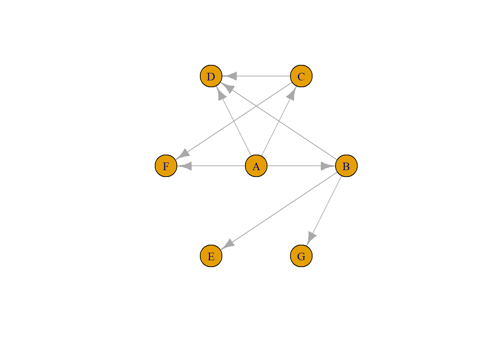
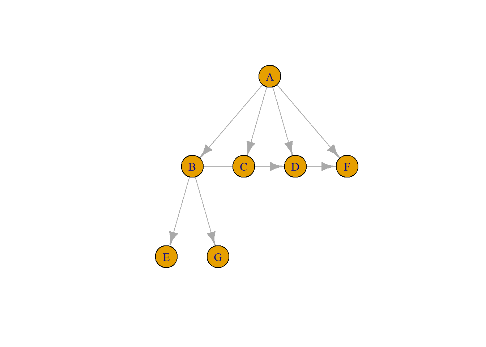
Many packages in R can plot graphs. We will learn two of them here, (i) igraph itself, which draws static plots, and (ii) visNetwork, which draws interactive plots. We used ggraph above for Figure 51.6. Visualising networks on a map is discussed in the geospatial chapters.
51.5 Plotting with plot() in igraph
Plotting a graph in R is very simple. We just use plot(), which calls the plot.igraph() method with default values for all its other arguments. As we have seen, the layout is important, and we can set it with the argument layout.
In the following example (Figure 51.8), we can see two random layouts of the same graph as in Figure 51.7.
my_gr <- igraph::as_data_frame(kite) %>%
slice(1:9) %>%
graph_from_data_frame()
set.seed(12345)
plot(my_gr, vertex.size = 25, layout = layout_randomly)
set.seed(54321)
plot(my_gr, vertex.size = 25, layout = layout_randomly)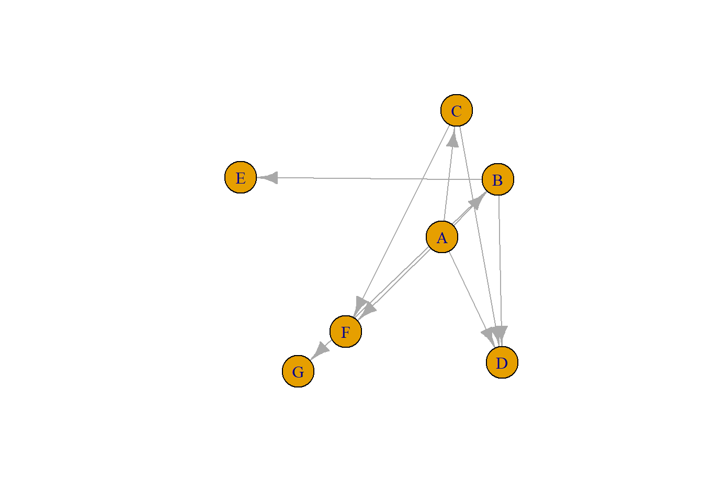
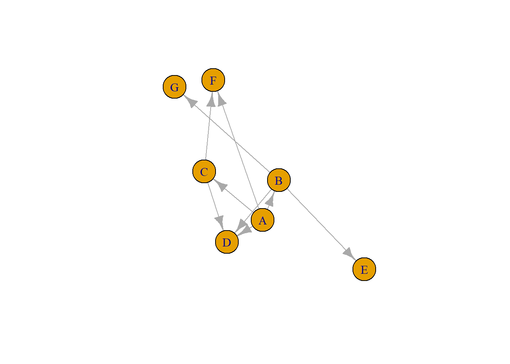
Many layouts involve randomness, so the same layout may place the vertices differently every time. By setting a random number seed with set.seed(), we can fix the layout and reproduce it.
To learn the plotting options, let us use a small and famous network, the Zachary karate club. It is used in almost every book on networks, so it is worth knowing. Wayne W. Zachary studied a karate club of 34 members from 1970 to 1972. He recorded which pairs of members met outside the club. During the study, the administrator (“John A”) and the instructor (“Mr Hi”) fell out, and the club split into two. Each member joined one side or the other. Later in this chapter we will use the same tools on audit data, a network of contractors.
This graph is available in the package igraphdata, from which we can load it.
library(igraphdata)
data("karate")
karate <- upgrade_graph(karate)
karateIGRAPH 4b458a1 UNW- 34 78 -- Zachary's karate club network
+ attr: name (g/c), Citation (g/c), Author (g/c), Faction (v/n), name
| (v/c), label (v/c), color (v/n), weight (e/n)
+ edges from 4b458a1 (vertex names):
[1] Mr Hi --Actor 2 Mr Hi --Actor 3 Mr Hi --Actor 4 Mr Hi --Actor 5
[5] Mr Hi --Actor 6 Mr Hi --Actor 7 Mr Hi --Actor 8 Mr Hi --Actor 9
[9] Mr Hi --Actor 11 Mr Hi --Actor 12 Mr Hi --Actor 13 Mr Hi --Actor 14
[13] Mr Hi --Actor 18 Mr Hi --Actor 20 Mr Hi --Actor 22 Mr Hi --Actor 32
[17] Actor 2--Actor 3 Actor 2--Actor 4 Actor 2--Actor 8 Actor 2--Actor 14
[21] Actor 2--Actor 18 Actor 2--Actor 20 Actor 2--Actor 22 Actor 2--Actor 31
[25] Actor 3--Actor 4 Actor 3--Actor 8 Actor 3--Actor 9 Actor 3--Actor 10
+ ... omitted several edgeskarate_data <- igraph::as_data_frame(karate)
head(karate_data) from to weight
1 Mr Hi Actor 2 4
2 Mr Hi Actor 3 5
3 Mr Hi Actor 4 3
4 Mr Hi Actor 5 3
5 Mr Hi Actor 6 3
6 Mr Hi Actor 7 3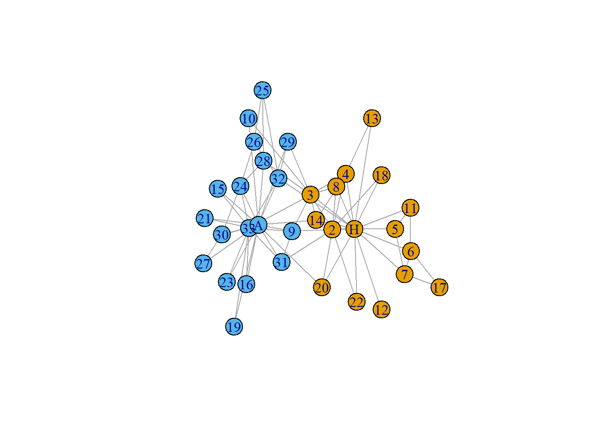
The vertex attribute Faction tells us which group each member actually joined after the split. The edge attribute weight is the number of different situations in which the two members interacted.
51.5.1 Layouts
Network layouts are algorithms which return coordinates for each vertex. igraph offers several built-in layouts. The algorithms behind them are outside the scope of this chapter.
-
layout_as_bipartite()Minimises edge crossings in a simple two-row (or column) layout, for bipartite graphs. -
layout_as_star()Places one vertex in the centre of a circle and the rest equally spaced on the circle. -
layout_as_tree()The Reingold-Tilford tree-like layout. Perfect for trees, and acceptable for graphs with not too many cycles. -
layout_in_circle()Places vertices on a circle, in the order of their vertex ids. -
layout_nicely()Tries to choose a suitable layout automatically, based on the graph. -
layout_on_grid()Places vertices on a rectangular grid, in two or three dimensions. -
layout_on_sphere()Places vertices on a sphere, approximately uniformly, in the order of their vertex ids. -
layout_randomly()Places the vertices randomly, in two or three dimensions. -
layout_with_dh()Places vertices by the simulated annealing algorithm of Davidson and Harel. -
layout_with_fr()Places vertices by the force-directed algorithm of Fruchterman and Reingold. Connected vertices pull each other close, and all vertices push each other away. -
layout_with_gem()Places vertices by the GEM force-directed algorithm. -
layout_with_kk()The Kamada-Kawai algorithm, based on a physical model of springs. -
layout_with_sugiyama()The Sugiyama algorithm for layered directed acyclic graphs. It minimises edge crossings.
Readers are advised to try these layouts to get a fair understanding of them. Let us see a few useful ones on the karate data.
- Circular layout, Figure 51.9 left.
- Fruchterman-Reingold, Figure 51.9 right.
- Kamada-Kawai, Figure 51.10 left.
- Sugiyama, Figure 51.10 right.
- Tree layouts (two representations), Figure 51.11.
Some of these layouts start from random positions. So we set a seed before each plot, to get the same picture every time.
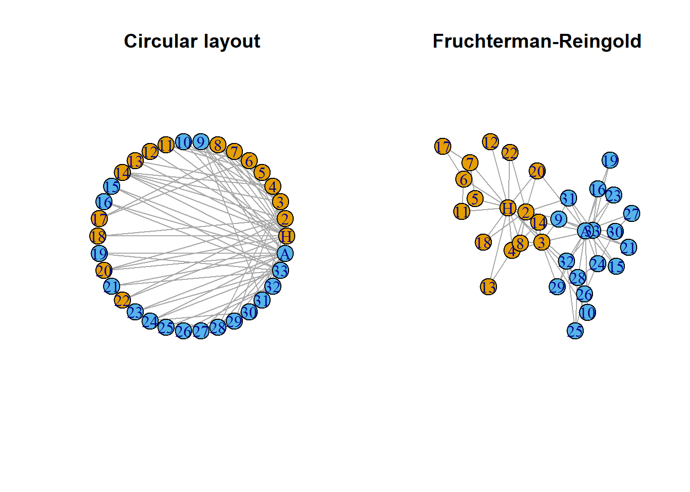
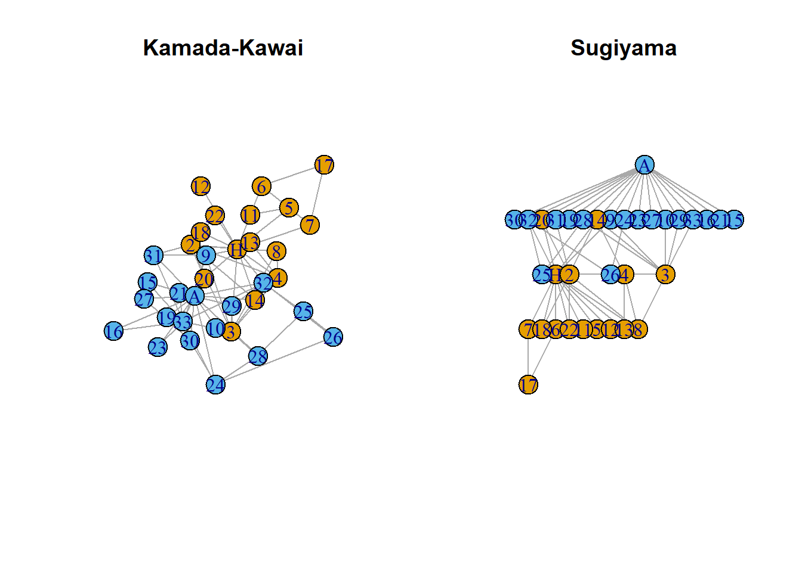
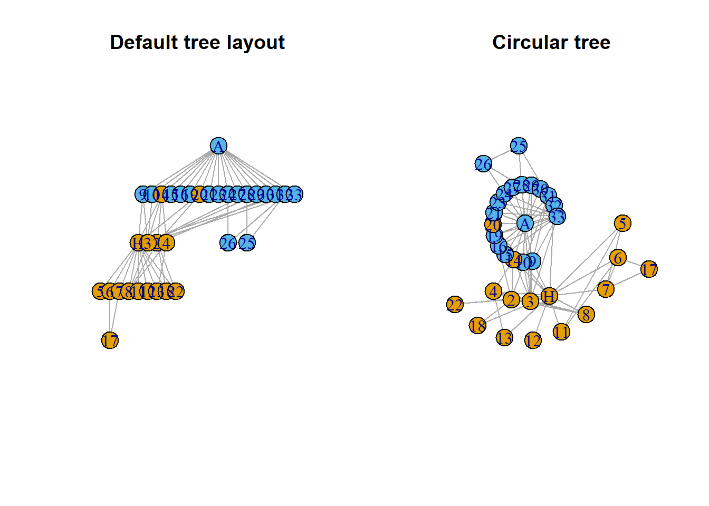
For a social network like this, the force-directed layouts (Fruchterman-Reingold and Kamada-Kawai) show the structure best. The two groups around Mr Hi and John A can be seen clearly. The circular and tree layouts hide it.
51.5.2 Showing vertex and edge properties
Besides the layout, we can show vertex and edge attributes, like their categories or amounts, through colour, size, width and shape. Our karate graph is already coloured. How? The vertices of a graph are coloured by its vertex attribute color. Let us see it.
V(karate)$color [1] 1 1 1 1 1 1 1 1 2 2 1 1 1 1 2 2 1 1 2 1 2 1 2 2 2 2 2 2 2 2 2 2 2 2It contains the integers 1 and 2, which plot() maps to its default colours. Let us replace them with colours of our choice.
[1] "red" "red" "red" "red" "red" "red"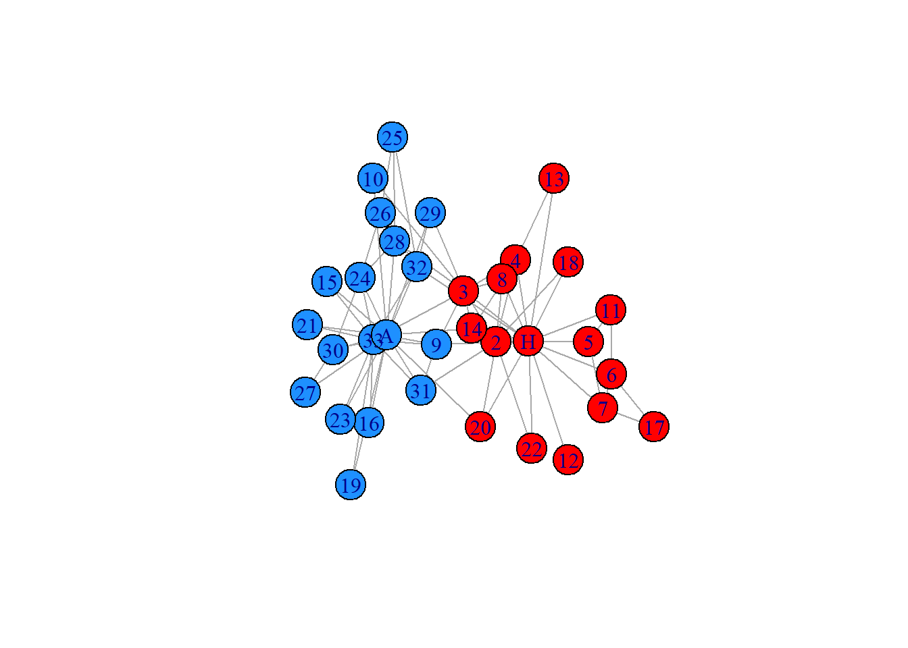
Similarly, we can use the following attributes to display properties of vertices and edges in an igraph plot.
-
Vertex properties
-
size. Size of the vertex. Default is 15. -
color. Fill colour of the vertex. -
frame.color. Border colour of the vertex. -
shape. Shape of the vertex, like"circle","square","rectangle"or"none". -
label. A character vector used to label the vertices. -
label.family. Font family of the label. Default isserif. -
label.font. Font of the label.1means plain (default),2bold,3italic,4bold italic and5symbol. -
label.cex. Font size of the label.
-
-
Edge properties
-
color. Colour of the edge. -
width. Edge width. -
lty. Line type for edges (0or"blank";1or"solid";2or"dashed";3or"dotted";4or"dotdash";6or"twodash"). -
label. Label of the edge (withlabel.family,label.fontandlabel.cexfor font family, font type and font size respectively). -
curved. Edge curvature, from0to1. -
arrow.size. Arrow size (default is 1), for directed graphs. -
arrow.width. Arrow width, default is1. -
arrow.mode. Arrow mode (0means no arrow,1backward,2forward and3both).
-
Instead of storing these as attributes in the graph, we can also give them as arguments to plot(), by adding vertex. or edge. before the property name, like vertex.size = 18.
In audit networks, we may size vendors by the amount paid, colour them by type, and draw thicker edges for larger payments. Let us see some of these properties through the following example.
# set reproducible layout
set.seed(123)
l_s <- layout_nicely(karate)
# Add vertex labels
V(karate)$label <- stringr::str_remove(V(karate)$name, "Actor ")
# Change shapes of two prominent actors
V(karate)$shape <- ifelse(V(karate)$name %in% c("Mr Hi", "John A"), "rectangle", "circle")
# Change edge width as per "weight"
E(karate)$width <- E(karate)$weight
plot(karate, layout = l_s, edge.label.cex = 0.7)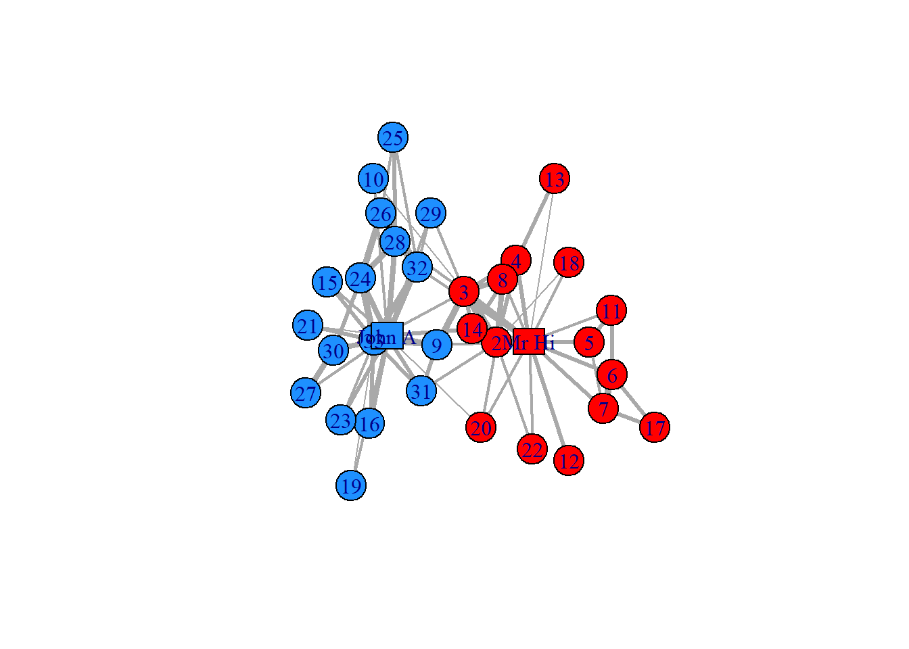
51.6 Our audit data, linked contractors
The karate club taught us how to draw a network. For the rest of the chapter, let us work on audit data. We audit the works contracts of an imaginary Public Works Division for the financial year 2024-25. The Division has 60 registered contractors, C01 to C60. From the registration papers, we have listed every pair of contractors who share some detail, a partner, an office address, a mobile number, an email ID or a bank account. Each such pair is one row of a table links. Its column weight is the number of details the two firms share.
Most firms share nothing with anyone. A few pairs share one detail for a genuine reason, like two family firms or two firms in the same market building. But we have planted two hidden groups.
-
Group A. Eight firms around
C07, which share partners, addresses and accounts among themselves. -
Group B. Six firms around
C33, linked in the same way. -
A bridge. Firm
C21shares one detail withC07and one withC33, and nothing else.
The code to create the data is folded.
Code to create the contractor master and the links
set.seed(2024)
prefix <- c("Shree Balaji", "Maa Durga", "Om Sai", "Jai Ambe", "Ganpati", "Kaveri",
"Narmada", "Shiv Shakti", "Laxmi", "Sai Krupa", "Annapurna", "Bharat",
"Vishwakarma", "Gayatri", "Sri Venkatesh")
suffix <- c("Constructions", "Builders", "Infra", "Enterprises", "Engineers", "Contractors")
# Contractor master
firms <- tibble(
firm_id = sprintf("C%02d", 1:60),
firm_name = sample(as.vector(outer(prefix, suffix, paste)), 60),
class = sample(c("Class I", "Class II", "Class III"), 60, TRUE, prob = c(0.2, 0.3, 0.5))
)
# A link between two firms, sharing k details
details <- c("partner", "address", "mobile", "bank account", "email")
link <- function(a, b, k) {
tibble(firm_a = a, firm_b = b,
shared = map_chr(k, \(i) paste(sort(sample(details, i)), collapse = ", ")),
weight = k)
}
# A hidden group. The first firm is linked to all, the others to some of each other
group_links <- function(g, p) {
hub <- link(g[1], g[-1], sample(1:3, length(g) - 1, TRUE))
pairs <- t(combn(g[-1], 2))
keep <- runif(nrow(pairs)) < p
bind_rows(hub, link(pairs[keep, 1], pairs[keep, 2], sample(1:2, sum(keep), TRUE)))
}
# Planted. Two hidden groups and a bridge between them
group_a <- c("C07", "C12", "C15", "C19", "C26", "C40", "C44", "C52")
group_b <- c("C33", "C03", "C09", "C28", "C47", "C55")
bridge <- "C21"
# Genuine. A few pairs of other firms share one detail
others <- setdiff(firms$firm_id, c(group_a, group_b, bridge))
genuine <- t(replicate(22, sample(others, 2)))
links <- bind_rows(
group_links(group_a, 0.35),
group_links(group_b, 0.35),
link(bridge, c("C07", "C33"), c(1, 1)),
link(genuine[, 1], genuine[, 2], rep(1, nrow(genuine)))
) |>
distinct(firm_a, firm_b, .keep_all = TRUE)Let us look at the two tables.
glimpse(firms)Rows: 60
Columns: 3
$ firm_id <chr> "C01", "C02", "C03", "C04", "C05", "C06", "C07", "C08", "C09…
$ firm_name <chr> "Kaveri Engineers", "Narmada Infra", "Sri Venkatesh Infra", …
$ class <chr> "Class III", "Class III", "Class I", "Class II", "Class I", …head(links)# A tibble: 6 × 4
firm_a firm_b shared weight
<chr> <chr> <chr> <dbl>
1 C07 C12 mobile, partner 2
2 C07 C15 email 1
3 C07 C19 address, email, partner 3
4 C07 C26 partner 1
5 C07 C40 address 1
6 C07 C44 bank account, mobile 2Let us build the graph. Sharing a detail has no direction, so the graph is undirected. We give the contractor master as vertices, so that firms with no links stay in the graph, and the firm name and class become vertex attributes.
cg <- graph_from_data_frame(links, directed = FALSE, vertices = firms)
cgIGRAPH 963b96e UNW- 60 50 --
+ attr: name (v/c), firm_name (v/c), class (v/c), shared (e/c), weight
| (e/n)
+ edges from 963b96e (vertex names):
[1] C07--C12 C07--C15 C07--C19 C07--C26 C07--C40 C07--C44 C07--C52 C12--C15
[9] C12--C44 C15--C26 C15--C40 C19--C26 C19--C52 C26--C40 C26--C52 C40--C52
[17] C44--C52 C03--C33 C09--C33 C28--C33 C33--C47 C33--C55 C03--C28 C09--C28
[25] C09--C55 C28--C47 C07--C21 C21--C33 C02--C54 C14--C27 C36--C46 C02--C58
[33] C30--C37 C41--C45 C02--C48 C50--C60 C38--C50 C30--C46 C30--C49 C23--C42
[41] C31--C56 C25--C30 C02--C18 C01--C14 C01--C45 C11--C54 C23--C57 C06--C60
[49] C16--C53 C01--C04The graph has 60 vertices, one for each registered firm, and 50 edges, one for each linked pair.
51.7 Interactive networks with visNetwork
Static plots are fine for small graphs and for printed reports. But while exploring a network, we want to zoom in, drag vertices around, and click on a vertex to see its details. The package visNetwork does exactly this. It draws interactive networks in a web browser, in RStudio’s viewer, and in HTML documents like this book.
visNetwork() takes two data frames.
-
nodesmust have a columnid. Optional columns control the look, likelabel(text shown),group(for colouring),title(tooltip shown on hover),value(size),shapeandcolor. -
edgesmust have the columnsfromandto. Optional columns includevalueorwidth(thickness),label,title,arrowsandcolor.
Let us draw the contractor network interactively. We colour the firms by their class of registration, and size them by their number of links. The tooltip of a firm shows its name, and the tooltip of an edge shows what the two firms share. Try hovering over a firm, clicking one to highlight its neighbours, choosing a firm from the drop-down list, and dragging a firm around.
library(visNetwork)
cg_nodes <- tibble(
id = V(cg)$name,
label = V(cg)$name,
group = V(cg)$class,
value = degree(cg) + 1,
title = paste0("<b>", V(cg)$name, "</b><br>", V(cg)$firm_name,
"<br>Links: ", degree(cg))
)
cg_edges <- links |>
transmute(from = firm_a, to = firm_b, value = weight,
title = paste("Shared:", shared))
visNetwork(cg_nodes, cg_edges, width = "100%", height = "450px") |>
visIgraphLayout(layout = "layout_with_fr", randomSeed = 11) |>
visOptions(highlightNearest = TRUE, nodesIdSelection = TRUE) |>
visLegend()Even at a glance, two tight clusters of firms stand out from the scattered pairs. We will find them with R shortly.
A few more useful functions of visNetwork are
-
visIgraph(g)draws anigraphobject directly, using its attributes. -
toVisNetworkData(g)converts anigraphobject into thenodesandedgesdata frames whichvisNetwork()needs. We can then add or change columns before drawing. -
visIgraphLayout()calculates the layout in R withigraph, instead of in the browser. The network then appears instantly and does not keep moving. This is very useful for bigger networks. Its argumentrandomSeedfixes the layout, likeset.seed(). -
visEdges(arrows = "to")draws arrows on directed edges. -
visSave(network, file = "network.html")saves the interactive network as a standalone HTML file, which can be shared with colleagues who do not use R.
TipKeep interactive networks small
The browser has to draw every vertex and edge of a visNetwork. A few hundred vertices are fine. With many thousands, the page becomes slow, and the picture is a hairball that nobody can read anyway. So first reduce the network in R, as explained in the next section and in Chapter 52. Then draw only the part that matters.
51.8 Parts of a graph, and adding or deleting vertices and edges
Real networks are big. Usually we are interested in only a part of them. Let us see how to take out parts of a graph, and how to add or delete vertices and edges.
Selecting vertices and edges. We can select vertices and edges by a condition on their attributes, inside V() and E().
+ 4/60 vertices, named, from 963b96e:
[1] C07 C26 C33 C52# Pairs of firms sharing 3 or more details
E(cg)[weight >= 3]+ 3/50 edges from 963b96e (vertex names):
[1] C07--C19 C07--C52 C33--C47Only 4 firms are linked with more than four others. And 3 pairs share three or more details. Sharing so much is hard to explain for two independent firms.
Neighbours. neighbors() gives the vertices directly connected to a vertex.
neighbors(cg, "C07")+ 8/60 vertices, named, from 963b96e:
[1] C12 C15 C19 C21 C26 C40 C44 C52Subgraphs. induced_subgraph() keeps the chosen vertices and all the edges between them. subgraph_from_edges() keeps the chosen edges and their vertices. Let us keep only the firms which share something with at least one other firm.
linked <- induced_subgraph(cg, V(cg)[degree(cg) > 0])
linkedIGRAPH 9650340 UNW- 44 50 --
+ attr: name (v/c), firm_name (v/c), class (v/c), shared (e/c), weight
| (e/n)
+ edges from 9650340 (vertex names):
[1] C07--C12 C07--C15 C07--C19 C07--C26 C07--C40 C07--C44 C07--C52 C12--C15
[9] C12--C44 C15--C26 C15--C40 C19--C26 C19--C52 C26--C40 C26--C52 C40--C52
[17] C44--C52 C03--C33 C09--C33 C28--C33 C33--C47 C33--C55 C03--C28 C09--C28
[25] C09--C55 C28--C47 C07--C21 C21--C33 C02--C54 C14--C27 C36--C46 C02--C58
[33] C30--C37 C41--C45 C02--C48 C50--C60 C38--C50 C30--C46 C30--C49 C23--C42
[41] C31--C56 C25--C30 C02--C18 C01--C14 C01--C45 C11--C54 C23--C57 C06--C60
[49] C16--C53 C01--C0416 firms share nothing with anyone, and have dropped out.
Ego networks. The ego network of a vertex is the vertex itself, its neighbours, and the edges between them. The argument order sets how many steps away we go. make_ego_graph() returns a list of such graphs, one for each vertex we ask for. In audit, the ego network of a doubtful entity is often the first thing we look at. Let us look at firm C21, up to two steps away (Figure 51.15).
ego21 <- make_ego_graph(cg, order = 2, nodes = "C21")[[1]]
set.seed(123)
plot(ego21, layout = layout_with_fr, vertex.size = 20, vertex.color = "orange")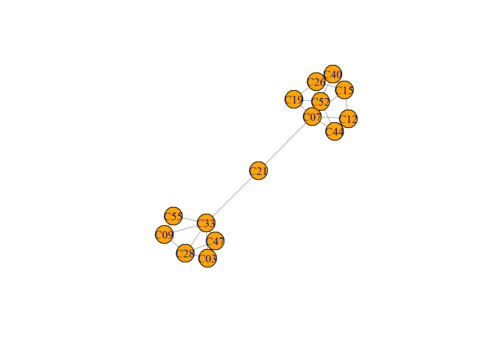
C21 has only two links. But two steps away, it reaches 14 firms, on both sides.
Deleting. delete_vertices() and delete_edges() remove vertices and edges. When a vertex is deleted, all its edges go with it. Let us remove C21, and see whether C07 and C33 are still connected.
without_c21 <- delete_vertices(cg, "C21")
components(cg)$membership[c("C07", "C33")]C07 C33
3 3 components(without_c21)$membership[c("C07", "C33")]C07 C33
6 3 With C21, the two firms fall in the same connected piece (component) of the network. Without it, they fall in different pieces. So C21 is the only link between the two groups. We will meet this idea again as betweenness.
Adding. add_vertices() and add_edges() add new vertices and edges. A convenient alternative is the + operator with vertices() and edges(). Suppose a new firm, C61, registers with the Division, and we find that it gives the same mobile number as C07.
51.9 Describing a network
Once we have a network, we want to describe it. How big and how dense is it? Which vertices are the most important? Are there groups within it? Let us answer these questions for the contractors.
51.9.1 Measures for the whole network
# Number of vertices and edges
vcount(cg)[1] 60ecount(cg)[1] 50# Density, the share of all possible edges which exist
edge_density(cg)[1] 0.02824859# Connected pieces, and their sizes
components(cg)$no[1] 24table(components(cg)$csize)
1 2 3 4 6 15
16 2 1 1 3 1 # Diameter, the longest of all shortest paths (counting steps)
diameter(cg, weights = NA)[1] 4# Average number of steps between two firms, where a path exists
mean_distance(cg, weights = NA)[1] 2.279503# Transitivity, the chance that two firms linked to a firm are linked to each other too
transitivity(cg)[1] 0.4285714Only 2.8% of all possible pairs of firms are linked. The network falls into 24 pieces. Of these, 16 are single firms with no links. The biggest piece has 15 firms. Within a piece, any firm can reach any other in at most 4 steps. A transitivity of 0.43 is high for such a sparse network. It means that linked firms tend to come in closely knit groups.
NoteWeights and distances
igraph treats the weight attribute as a distance in path-based measures like diameter(), distances(), betweenness() and closeness(). In our data, a larger weight means more shared details, that is, a stronger link. A stronger link should mean a shorter distance, not a longer one. So here we use weights = NA to ignore the weights and simply count steps. Always check what the weights in your data mean before using them in such measures.
51.9.2 Paths
shortest_paths() gives the shortest path between two vertices, and distances() gives the number of steps between pairs of vertices. In audit, the path tells us how two entities are connected. Let us see how firm C40 of one group is linked with firm C55 of the other.
shortest_paths(cg, from = "C40", to = "C55", weights = NA)$vpath[[1]]
+ 5/60 vertices, named, from 963b96e:
[1] C40 C07 C21 C33 C55 C33 C55
C40 3 4
C07 2 3The path runs through C07, C21 and C33. Firms with no path between them are shown at a distance of Inf, that is, infinite.
51.9.3 Importance of vertices (centrality)
Which firms are the most important? There are several ways to measure this, called centrality measures.
- Degree is the number of edges of a vertex. For a directed graph, in-degree and out-degree count incoming and outgoing edges separately. A bank account receiving money from 40 beneficiaries has a high in-degree.
- Strength is the sum of the weights of the edges of a vertex, for example the total amount paid or received. Here, it is the total number of details a firm shares.
- Betweenness counts how often a vertex lies on the shortest paths between other vertices. A vertex with high betweenness is a bridge or a middleman between groups.
- Closeness measures how close a vertex is to all others. A vertex with high closeness can reach everyone quickly.
- Eigenvector centrality and PageRank give high scores to vertices connected to other important vertices. Being connected to the boss matters more than being connected to many juniors.
Let us calculate these for the contractors and look at the top firms.
# A tibble: 8 × 6
firm degree strength betweenness closeness eigen
<chr> <dbl> <dbl> <dbl> <dbl> <dbl>
1 C07 8 14 54.7 0.04 1
2 C33 6 10 49 0.034 0.04
3 C21 2 2 48 0.038 0.15
4 C02 4 4 9 0.167 0
5 C30 4 4 9 0.167 0
6 C01 3 3 8 0.143 0
7 C14 2 2 4 0.111 0
8 C45 2 2 4 0.111 0 C07 and C33, the centres of the two groups, have the most links and the highest betweenness. That is what we would expect. Now look at C21. It has only 2 links, as few as many ordinary firms. Yet its betweenness is 48, close to that of the two group leaders. Every path between the two groups passes through it. A degree count alone would never have picked it out.
Look also at the closeness of firms like C02 and C30. It is higher than that of C07. This is because igraph measures closeness only over the firms a vertex can reach. In a network of many separate pieces, firms in a small piece look “close” to everything. So use closeness within one connected piece, not across the whole network.
TipAudit tip
Sort by betweenness, not only by degree. A firm, account or person with few links but high betweenness is a go-between. In real cases, this is often a common accountant, an agent, or a relative who connects firms that claim to be independent. Find out who is behind that vertex.
51.9.4 Communities
A community is a group of vertices which are densely connected with each other, and only loosely connected with the rest. Finding communities is called community detection or clustering. igraph has several algorithms for it. The Louvain method, cluster_louvain(), is fast and works well for most networks. It starts from a random order, so we set a seed.
set.seed(42)
cg_comm <- cluster_louvain(cg, weights = NA)
sizes(cg_comm)Community sizes
1 2 3 4 5 6 7 8 9 10 11 12 13 14 15 16 17 18 19 20 21 22 23 24 25
6 6 6 1 4 9 1 1 1 2 1 1 1 3 1 6 1 2 1 1 1 1 1 1 1 Louvain has found 25 communities. Of these, 16 are single firms with no links. Let us see the communities of C07 and C33.
cg_comm[[membership(cg_comm)["C07"]]][1] "C07" "C12" "C15" "C19" "C21" "C26" "C40" "C44" "C52"cg_comm[[membership(cg_comm)["C33"]]][1] "C03" "C09" "C28" "C33" "C47" "C55"The community of C07 has all 8 firms of Group A, along with the bridge firm C21. The community of C33 has all 6 firms of Group B. Just from the pattern of shared details, the algorithm has found both hidden groups. Figure 51.16 shows the linked firms, coloured by community.
comm_nodes <- tibble(
id = V(linked)$name,
label = V(linked)$name,
group = paste("Community", membership(cg_comm)[V(linked)$name]),
title = V(linked)$firm_name
)
visNetwork(comm_nodes, cg_edges, width = "100%", height = "450px") |>
visIgraphLayout(layout = "layout_with_fr", randomSeed = 11) |>
visOptions(highlightNearest = TRUE)Communities point to groups like bidders who bid together, firms which trade mostly among themselves, or beneficiaries who share agents. Let us now use them on the Division’s tenders.
51.10 Audit use case, linked firms bidding against each other
A tender is competitive only if the bidders are independent. If every bid in a tender comes from one hidden group, the group can decide the winner and the rate among themselves. Let us check the Division’s 40 tenders of 2024-25. The table bids has one row for each bid, and the table tenders gives the estimated cost of each work. We have planted seven tenders in which all the bidders come from one of the two hidden groups.
Code to create the tenders and bids
set.seed(7)
n_t <- 40
bids <- map_dfr(1:n_t, function(t) {
b <- sample(firms$firm_id, sample(3:5, 1))
# Planted. All bidders from Group A, or all from Group B
if (t %in% c(4, 11, 18, 26, 33)) b <- sample(group_a, sample(3:4, 1))
if (t %in% c(8, 29)) b <- sample(group_b, 3)
tibble(tender_no = sprintf("PWD/%02d/2024-25", t), firm_id = b)
})
tenders <- tibble(
tender_no = sprintf("PWD/%02d/2024-25", 1:n_t),
est_cost = round(rlnorm(n_t, log(60e5), 0.6), -3)
)head(bids)# A tibble: 6 × 2
tender_no firm_id
<chr> <chr>
1 PWD/01/2024-25 C19
2 PWD/01/2024-25 C31
3 PWD/01/2024-25 C28
4 PWD/01/2024-25 C39
5 PWD/02/2024-25 C15
6 PWD/02/2024-25 C26 head(tenders)# A tibble: 6 × 2
tender_no est_cost
<chr> <dbl>
1 PWD/01/2024-25 10089000
2 PWD/02/2024-25 7484000
3 PWD/03/2024-25 11854000
4 PWD/04/2024-25 3810000
5 PWD/05/2024-25 7837000
6 PWD/06/2024-25 10395000We attach the community of each bidder, and count, for each tender, the bidders and the different communities they come from.
firm_comm <- tibble(firm_id = V(cg)$name,
community = as.integer(membership(cg_comm)))
tender_check <- bids |>
left_join(firm_comm, by = "firm_id") |>
group_by(tender_no) |>
summarise(bidders = n(),
communities = n_distinct(community),
firms = paste(sort(firm_id), collapse = ", ")) |>
left_join(tenders, by = "tender_no")
flagged <- tender_check |>
filter(communities == 1)
flagged# A tibble: 7 × 5
tender_no bidders communities firms est_cost
<chr> <int> <int> <chr> <dbl>
1 PWD/04/2024-25 4 1 C15, C40, C44, C52 3810000
2 PWD/08/2024-25 3 1 C09, C47, C55 10982000
3 PWD/11/2024-25 4 1 C15, C26, C40, C44 6625000
4 PWD/18/2024-25 3 1 C07, C12, C52 3105000
5 PWD/26/2024-25 4 1 C12, C15, C26, C52 12182000
6 PWD/29/2024-25 3 1 C03, C28, C33 7382000
7 PWD/33/2024-25 3 1 C12, C26, C44 11213000In 7 tenders, every bidder comes from the same community. These are exactly the seven tenders we planted. Their estimated cost adds up to ₹5.53 crore. In these tenders, the “competition” was among firms that share partners, addresses or bank accounts. In 3 more tenders, two or more of the bidders come from the same community, but at least one bidder is from outside. These are weaker leads, and may be looked at after the first seven.
What should the auditor do next? For each flagged tender, the auditor would
- pull the tender file, and see who won, at what rate, and how far the losing bids were above the winning bid;
- ask the Division for the registration papers of the linked firms, and confirm the shared partner, address or bank account from the documents;
- check whether the Division had any declaration from the bidders that they were not related;
- record the linked firms, the tenders and the amounts in the working papers, and raise an audit query to the Division.
WarningCaution
A community is a group found by an algorithm, not a fact. Louvain may put a loosely linked firm into a group, as it did with C21 here, and a different seed may move such a firm. So before raising a query, look at the actual links between the bidders of a tender, with induced_subgraph() or shortest_paths(). Report what the firms share, not the community number.
51.11 A suggested workflow
- Build an edge list. From the payment register, the beneficiary list or the registration papers, make a data frame in which each row is one link. Examples are a beneficiary and a bank account, a payment from one firm to another, or two firms sharing a partner. Keep the amount, the date or the shared detail as further columns, so they become edge attributes.
-
Create the graph. Use
graph_from_data_frame(). Keep it directed for payments, and usedirected = FALSEfor shared details like a common account. Give averticestable to keep entities with no links, and their attributes. -
Check the graph object. Print it and confirm the number of vertices and edges, and the attributes. Get the data back with
igraph::as_data_frame()whenever you need to inspect it. -
Describe the whole network. Use
vcount(),ecount(),edge_density()andcomponents()to see how big the network is and whether it falls into separate pieces. -
Find the important entities. Calculate
degree(),strength()andbetweenness(). A bank account receiving money from many beneficiaries, or a firm acting as a bridge between groups, deserves a look. -
Find the groups. Set a seed and run
cluster_louvain()to find communities, such as firms that share partners or bidders who bid together. -
Zoom into doubtful cases. Take the ego network of a doubtful entity with
make_ego_graph(), or a part of the graph withinduced_subgraph(). Useshortest_paths()to see how two entities are linked. - Join the findings back to the transactions. Attach the community or centrality of each entity to the tenders, bills or payments, and value the doubtful ones in rupees.
-
Show only what matters. Draw the reduced network with
plot()orvisNetwork(). Set a seed before any random layout. Save the interactive version withvisSave()to share with colleagues who do not use R.
ImportantRemember
A connection in a network is a lead, not a finding. Two firms may share an address because they sit in the same market building, so examine the records before reporting. Set a seed before any layout or community detection that has randomness in it, so that the result can be reproduced. Also check what the weights in your data mean, because igraph treats weight as a distance in measures like betweenness().
51.12 Where next
In Chapter 52, we apply these tools to more audit problems. We find one person behind many registrations of a scheme, a cartel of bidders, circular trading between firms, and vendors linked with employees.
51.13 Summary of functions used
| Function | Package | What it does |
|---|---|---|
graph_from_data_frame() |
igraph | Creates a graph from a data frame of edges (and vertices) |
graph_from_edgelist(), graph_from_adjacency_matrix()
|
igraph | Create a graph from an edge matrix or adjacency matrix |
as_undirected(), as_directed()
|
igraph | Convert between directed and undirected graphs |
igraph::as_data_frame(), as_adjacency_matrix()
|
igraph | Get the data back from a graph |
V(), E()
|
igraph | Vertices and edges of a graph, with their attributes via $
|
plot(), layout_*()
|
igraph | Static plot of a graph, with a chosen layout |
ggraph(), geom_edge_fan(), geom_node_point(), geom_node_text()
|
ggraph | Plots a graph in the style of ggplot2
|
set.seed() |
base | Fixes random layouts and community detection, so that results can be reproduced |
visNetwork(), visOptions(), visLegend(), visIgraphLayout(), visSave()
|
visNetwork | Interactive network plots |
neighbors(), induced_subgraph(), subgraph_from_edges(), make_ego_graph()
|
igraph | Parts of a graph around chosen vertices or edges |
delete_vertices(), delete_edges(), add_vertices(), add_edges(), vertices(), edges()
|
igraph | Remove or add vertices and edges |
components() |
igraph | Splits a graph into connected pieces |
vcount(), ecount(), edge_density(), diameter(), mean_distance(), transitivity()
|
igraph | Measures of the whole network |
shortest_paths(), distances()
|
igraph | Paths and number of steps between vertices |
degree(), strength(), betweenness(), closeness(), eigen_centrality()
|
igraph | Importance (centrality) of each vertex |
cluster_louvain(), sizes(), membership()
|
igraph | Finds communities in a network, their sizes and members |
glimpse(), left_join(), n_distinct()
|
dplyr | Look at the data, and attach communities to the bids |